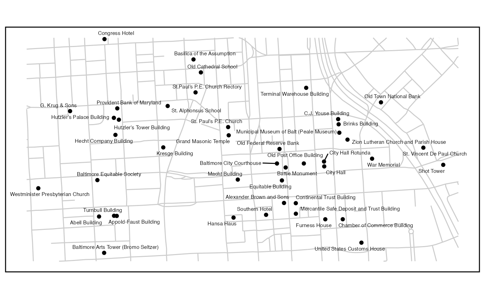
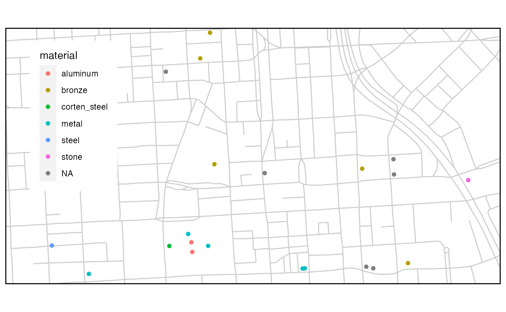

Getting remote data and photos using API functions
get_remote_data.Rmd
location <-
get_location(
type = "neighborhoods",
name = "Downtown",
package = "mapbaltimore"
)
basemap <-
ggplot() +
layer_location_data(
data = "streets",
package = "mapbaltimore",
location = location,
color = "gray80"
)Get data from an ArcGIS FeatureServer or MapServer
A large number of cities have adopted ArcGIS Hub as an open data platform for spatial and non-spatial data. get_esri_data wraps the esri2sf package to facilitate getting spatial data by bounding box or by area name.
For example, this FeatureServer from Open Baltimore provides a list of designated landmarks in Downtown Baltimore.
# https://data.baltimorecity.gov/datasets/landmarks-1/explore
url <- "https://opendata.baltimorecity.gov/egis/rest/services/Hosted/Landmarks/FeatureServer/0"
landmarks <-
get_esri_data(
location = location,
url = url
)
#> Layer Type: Feature Layer
#> Geometry Type: esriGeometryPoint
#> Service Coordinate Reference System: 3857
landmarks <-
dplyr::select(landmarks, fid, name, address)
basemap +
layer_location_data(
data = landmarks
) +
layer_location_data(
data = landmarks,
geom = "text_repel",
size = 2
) +
layer_neatline(
data = location
)
Even non-spatial Tables can be filtered to a location if the table includes latitude and longitude columns.
Get data from Open Street Map
To get data from Open Street Map, you may need to refer to the OSM Wiki for more information about keys and tags such as tourism and artwork.
osm_artwork <-
get_osm_data(
location = location,
key = "tourism",
value = "artwork",
geometry = "point"
)
#> ℹ Attribution is required when you use Open Street Map data.
#> See 'https://www.openstreetmap.org/copyright' for more information on the Open Database Licence.
basemap +
layer_location_data(
data = osm_artwork,
aes(color = material)
) +
layer_neatline(
data = location,
expand = TRUE
) +
theme_legend(position = "topleft")
Get data about photos from Flickr
The get_flickr_photos function depends on a development version of the FlickrAPI package so I am not currently able to render the vignette to show
photos_sf <-
get_flickr_photos(
location = location,
img_size = "s",
tags = "monument",
orientation = "landscape",
geometry = TRUE # this is the default
)The following is an experimental function using the leafpop package to make an interactive photo map based on photos from Flickr.
mapview_flickr <- function(photos,
img_size = "s") {
img_size <-
match.arg(
img_size,
c("sq", "t", "s", "q", "m", "n", "z", "c", "l", "o")
)
leaflet_map <-
leaflet::leaflet() %>%
leaflet::addTiles() %>%
leaflet::addCircleMarkers(data = photos, group = "photos")
img_url <- photos$img_url
img_width <- photos$img_width
img_height <- photos$img_height
photo_map <-
leafpop::addPopupImages(
map = leaflet_map,
image = img_url,
width = img_width,
height = img_height,
group = "photos"
)
return(photo_map)
}
mapview_flickr(photos = photos_sf, img_size = "s")